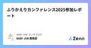

BABY JOB テックブログのフィード
https://zenn.dev/p/babyjob
私たち BABY JOB は、子育てを取り巻く社会のあり方を変え、「すべての人が子育てを楽しいと思える社会」の実現を目指すスタートアップ企業です。圧倒的なぬくもりと当事者意識をもって、子どもと向き合う時間、そして心のゆとりが生まれるサービスを創出します。https://baby-
フィード

ふりかえりカンファレンス2025参加レポート 1
1
BABY JOB テックブログのフィード
はじめにこんにちは！BABY JOB株式会社 開発部です。4/12 (土) に開催されたふりかえりカンファレス 2025 へ弊社から 3 名が参加してきましたので、参加レポートです！ ふりかえりカンファレンス 2025 とはふりかえりカンファレンスは、ふりかえりを実践している方々、ふりかえりに興味がある方々に向け、マインドセットや新しい手法の提案などに加えて、ワークショップでふりかえりを体験できるカンファレンスです。イベントページよりふりかえりという括りのみで発表したり、エンジニア・スクラムマスター以外の役割の参加者も多い文字通り、ふりかえりのことについて発表した...
12日前

PHPerKaigi 2025 登壇&参加レポート
BABY JOB テックブログのフィード
はじめにこんにちは！ BABY JOB 開発部です！今回は、2025/03/21 〜 2025/03/23 で開催された「PHPerKaigi 2025」へ登壇・参加してきた 3 名のメンバーによるレポートです！ PHPerKaigi 2025 とは...以下 公式サイト より引用PHPerKaigi（ペチパーカイギ）は、PHPer、つまり、現在PHPを使用している方、過去にPHPを使用していた方、これからPHPを使いたいと思っている方、そしてPHPが大好きな方たちが、技術的なノウハウとPHP愛を共有するためのイベントです。 メンバーの感想 Y-Kanohい...
1ヶ月前
社内 LT 会を 1 年間続けられたので、ふりかえってみた
BABY JOB テックブログのフィード
こんにちはー！BABY JOB株式会社の @mackey0225 です！この記事では、BABY JOBのエンジニア組織で、2024 年の 2 月から社内 LT 会を開催し、無事に 1 年間続けられたので、そのことについてふりかえりました。具体的には、以下の内容についてまとめます！BABY JOB の社内 LT 会についてなぜ社内 LT 会を始めたのか？続けられるためにやったこと・考えたこと社内 LT 会を通じて得たもの・失ったものこの記事が、これから社内で勉強会や LT 会などの企画を始めようとしている方や、今やっているけど壁を感じている方にとって、有益になれば幸いで...
1ヶ月前
CloudShell 上の DuckDB に VPC フローログを取り込んでみた
BABY JOB テックブログのフィード
皆さんは、AWS の VPC フローログを取得していますでしょうか？おそらく、取っている方が多いのかなと思っています。以前、DuckDB に関する記事をいくつか書きました。その中で以下の記事では、AWS の CloudShell に DuckDB を入れて、S3 の ALB のログを SQL ライクに参照する話を書きました。https://zenn.dev/babyjob/articles/mackey0225-use-duckdb-in-cloudshell今回はその VPC フローログ版になります。 本題の前の簡単な説明 VPC フローログとはhttps://do...
1ヶ月前
AWSやAzure認定取得者がGoogle Cloud認定試験を受験する際に知っておきたいこと
BABY JOB テックブログのフィード
はじめに先日、はじめて Google Cloud 認定試験（Associate Cloud Engineer）を受験しました。これまで AWS や Azure の認定試験はいくつか受験したのですが、Google Cloud 認定は勝手が違うなと思うことがあったので紹介します。認定試験合格のための対策等については本記事では記述しないのでご容赦ください。また、私の受験時点(2025年3月)での情報であるという点もご留意ください。 試験予約以前 日本語の試験ガイドはどこにあるか？受験準備をする際には公式の試験ガイドをまず確認するかと思いますが、日本語の試験ガイドを探すのに...
2ヶ月前
UIデザイン講座2回目を開くことになった話（準備編）
BABY JOB テックブログのフィード
はじめにBABY JOB株式会社でUIデザインを担当しているelmoです。以前UIデザイン講座を開いた記事を3つほど書いたのですが、それの2回目を2025年4月に実施することになりました。（1回目は2023年10月に実施したので、1年5ヶ月ぶりですね！）UIデザイン講座１回目の記事「エンジニアさん向けにUIデザイン講座を開きたい！（準備編）」「エンジニアさん向けにUIデザイン講座を開きたい！（完結編）」「エンジニアさん向けにUIデザイン講座を開きたい！（成果物編）」こちらもチェックしていただけると嬉しいです！1回目は私の独断で「表層デザイン」を取り上げたのですが、今回...
2ヶ月前
CloudFormation の拡張機能利用スタックを更新しようとしたら、変更セットが作成できなくてハマった
BABY JOB テックブログのフィード
はじめにAWS CloudFormation でAWS::LanguageExtensionsを利用して言語機能を拡張すると、Fn::ForEachによる繰り返し処理等、素の CloudFormation だけでは実施できない処理が可能となります。AWS::LanguageExtensionsは便利な拡張ではありますが、Conditionでリソース作成の有無を切り替えようとした際に中々うまくいかなかったので、遭遇したエラーとその解決策について紹介します。 先に解決策AWS::LanguageExtensions 変換 - 考慮事項に記載の通り、AWS::LanguageE...
2ヶ月前
Spring gRPC に触れてみた
BABY JOB テックブログのフィード
!この記事は、2025年01月30日に開催された関ジャバ'25 1月度で LT 登壇した内容をベースに記事化したものです。ちなみに、登壇で使用した投影資料は下記です。 はじめに：記事の概要 対象の読者Spring Boot を触ったことがある方Spring Boot に関しては基本的なことについて知っているものとして書いています この記事で書くことSpring gRPC の概要公式の情報を元に概要のまとめ雰囲気重視Spring gRPC を使った簡単なデモサンプルコードを使って雰囲気を掴む この記事で書かないことgRPC ...
2ヶ月前
デブサミ2025参加レポート
BABY JOB テックブログのフィード
はじめにこんにちは！BABY JOB 開発部です！今回は、2025/02/13 〜 2025/02/14で開催された「Developers Summit 2025」へ参加してきた3名のメンバーによる参加レポートです！ Developers Summit 2025とはDevelopers Summit（デブサミ）は、2003年から毎年開催されるITエンジニアのための祭典です。「デベロッパーをスターにし、世の中のアップデートを加速する」をミッションに、多様な開発者が一歩踏み出すきっかけとなりたく、これまで開催してきました。デブサミ2025では、「ひろがるエンジニアリング」と...
3ヶ月前
【失敗と学びシリーズ】本番環境のサービス画面上に localhost のリンクが埋め込まれた話
BABY JOB テックブログのフィード
!本記事は BABY JOB開発部の失敗と学びシリーズ の記事です。 はじめにBABY JOB 開発部のミヤギです。本記事では、最近起きたチームの失敗の事例と、そこから得た学びを共有します。この事例が、読んだ方の頭の片隅に残り、何かしらお役に立てると幸いです。 ことの発端あるタスクの一環で、プロダクト全体のデザインを見直していた時のことでした。ステージング環境を使って、よく使われる画面からニッチな画面まで、様々な機能を触っていると、最近追加されたリンクを発見。「こんな仕様になったんだ〜」と思いそのリンクを押してみました。すると、以下の画面が。。実際の画面画...
3ヶ月前
RSGT2025にはじめて参加してきました
BABY JOB テックブログのフィード
はじめにこんにちは、BABY JOB株式会社で「スクラム...マスター？」から「スクラムマスター」になったたかしろです！今回は、はじめてRSGT2025に参加してきたので、ふりかえり兼ねて感想レポを書かせていただきます。 RSGTとはサイトより。Regional Scrum Gathering Tokyo 2025は、東京で行われるRegional Gatheringとして14回目になります。運営母体である一般社団法人スクラムギャザリング東京実行委員会は、スクラムを実践する人が集い垣根を超えて語り合う場を提供するという目的によりコミットしています。 ロゴスポンサー...
4ヶ月前
PHPカンファレンス2024 参加レポート
BABY JOB テックブログのフィード
はじめにこの記事は2024年12月22日に開催されたPHPカンファレンス2024の参加レポートとなります。 PHPカンファレンスとはPHPカンファレンスは、PHP関連の技術を主とした技術者カンファレンスです。 2000年に日本のユーザ会によってPHPカンファレンスが初めて行われ、今年で25回目の開催となります。 これからPHPをはじめる方から、さらにPHPを極めていきたい方まで幅広く楽しめるイベントになるよう様々なプログラムをご用意しております。公式サイトより引用https://phpcon.php.gr.jp/2024/ 各トークの感想 PHPの今とこれか...
5ヶ月前
2024年、個人的に良かったインプットのふりかえり
BABY JOB テックブログのフィード
!この記事は ふりかえり Advent Calendar 2024 の 25日目の記事です。メリークリスマス！🎄 BABY JOB株式会社のたかしろです。私は普段、"Scrum Master as a Project Manager" [1]という役割を自称し、手ぶら登園というサービスの開発に従事しています。 個人的に良かったインプットをふりかえります今年は、色んな角度のインプットを意識しようと思い、イベント参加・読書・スライドなどなど、これまで自身が弱かったアンテナを広げることを意識し続けました。12月現在、だいぶ身についてきているので、取り組みとして成功だったように感じ...
5ヶ月前
エンジニアリングマネージャーの役割委譲のための思考整理
BABY JOB テックブログのフィード
!この記事は BABY JOB Advent Calendar 2024 の 25 日目の記事です。 きっかけ現職に入社して今年の 11 月で丸 3 年が経ち、改めて組織規模の変化や自身の考え方の変化を感じています。とくに今年は採用が順調に進捗し、開発組織が急拡大したこともあり、今後、組織を、自身の役割を、どのように設計していくべきかを考えることも多く、また、年末にかけてタイミングよく先人達のいくつかの記事[1]を読む中で、以下ような考え（覚悟）に至りました。times チャンネルより昨年のアドベントカレンダーでは「BABY JOB の開発チームにおける役割 v2.0」...
5ヶ月前
PHP カンファレンス 2024 に登壇しました
BABY JOB テックブログのフィード
!この記事は BABY JOB Advent Calendar 2024 の 24 日目の記事です。 はじめに2024 年 12 月に開催された PHP カンファレンス 2024 にスピーカーとして登壇させていただきました。筆者がオフライン参加した体験レポートになります。 イベント概要PHP カンファレンスは、PHP 関連の技術を主とした技術者カンファレンスです。 2000 年に日本のユーザ会によって PHP カンファレンスが初めて行われ、今年で 25 回目の開催となります。 これから PHP をはじめる方から、さらに PHP を極めていきたい方まで幅広く楽しめるイベン...
5ヶ月前
【Git のセットアップ】GitHub CLI を使って GitHub に接続する
BABY JOB テックブログのフィード
!この記事は BABY JOB Advent Calendar 2024 の 22 日目の記事です。 はじめに最近、GitHub CLI を使い始めました。CLI で GitHub の操作ができて便利なのはもちろんですが、CLI を使わない人でも Git をセットアップする時は GitHub CLI を使うと簡単に GitHub への接続設定ができるのでおすすめです。というわけで、今回は GitHub CLI を使って GitHub に接続する方法を紹介します。 Git のバージョンGit はインストールされている前提で進めます。$ git --versiongi...
5ヶ月前
Java SE Bronze問題集（黒本）を解いてみた
BABY JOB テックブログのフィード
!この記事は BABY JOB Advent Calendar 2024 の 24 日目の記事です。 はじめにJava SE Bronze[1]と調べると「プログラミング未経験者向け」や「Java初学者向け」とあります。そんな中、未経験からJavaエンジニアとしてのキャリアをスタートして約5年が経った今、Java SE Bronzeの黒本を解いてみてつまづいたポイントや感じたことを紹介したいと思います。 なぜJava SE Bronzeの問題を解こうと思ったのかJavaエンジニアとして5年が経ち、なぜJava Silver[2]やJava Gold[3]ではなくJava...
5ヶ月前
Daily UI Challenge day.1 に挑戦してみた
BABY JOB テックブログのフィード
!この記事は BABY JOB Advent Calendar 2024 の 23 日目の記事です。 はじめにBABY JOB の elmo です。最近ずっと仕事でUIデザインを作成しているのですが、ちょっと行き詰まりを感じてしまい、気分転換にDaily UI Challengeをやってみることにしました。 Daily UI Challenge とはDaily UI Challenge は、UIデザインのスキルを向上させるための人気のあるオンラインのデザインチャレンジです。100日間にわたって毎日異なるUIデザインの課題をとくことで、さまざまなUIデザインスキルを磨く...
5ヶ月前
アウトプットのネタを育てるための工夫
BABY JOB テックブログのフィード
!この記事は BABY JOB Advent Calendar 2024 の 23 日目の記事です。!この記事は下の記事の後編にあたりますので、一緒に見てもらえると嬉しいです！アウトプットのネタを見つけるヒントhttps://zenn.dev/babyjob/articles/mackey0225-how-to-find-ideasさて、みなさん！アドベントカレンダーは、楽しんで書いていますかー？楽しいぜー！🔥絶好調だぜー！⚡️という方もいれば、つらたん😥。。しんどみ💧。。。ぴえん超えてぱおん🐘。。。といった産みの苦しみに苛まれている方もいるかなと思...
5ヶ月前
アウトプットのネタを見つけるヒント
BABY JOB テックブログのフィード
!この記事は BABY JOB Advent Calendar 2024 の 22 日目の記事です。!この記事は下の記事の前編にあたりますので、一緒に見てもらえると嬉しいです！アウトプットのネタを育てるための工夫https://zenn.dev/babyjob/articles/mackey0225-how-to-cultivate-ideas まえがきさて、みなさん！アドベントカレンダーは、楽しんで書いていますかー？楽しんで進められている方もいれば、苦労している方もいらっしゃるかなと思います。例えば、書く日は決まっているが、記事のネタとなるものがなかなか思いつ...
5ヶ月前